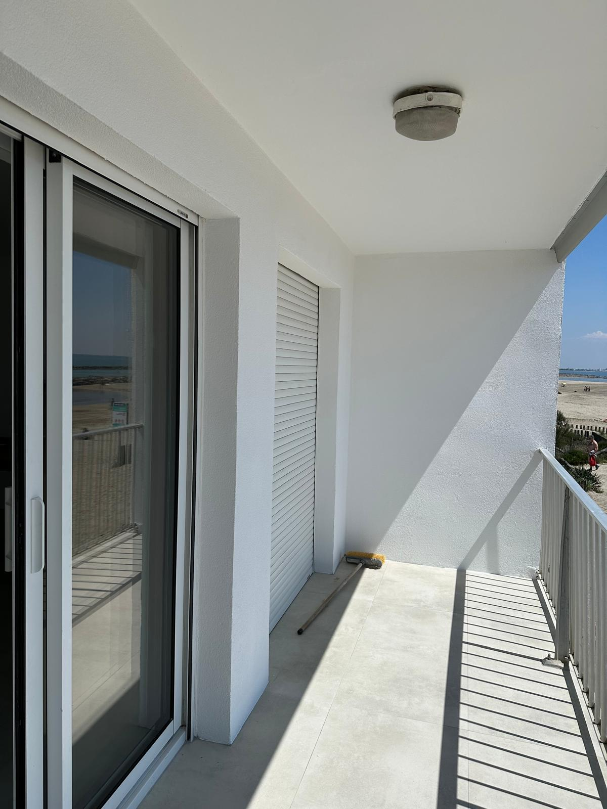
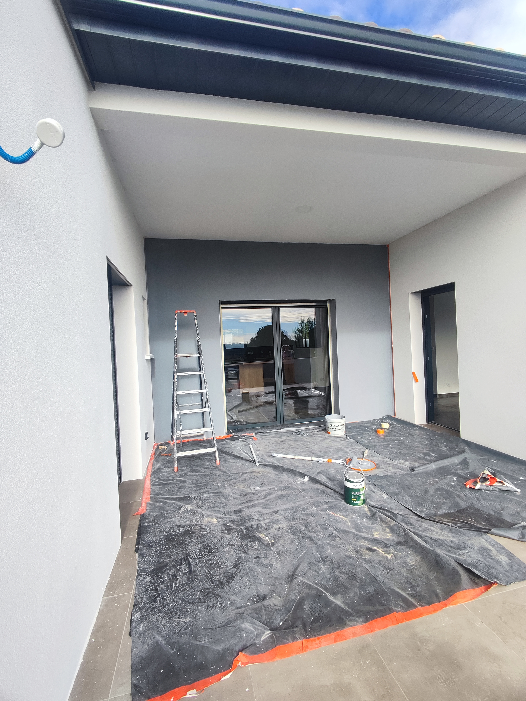
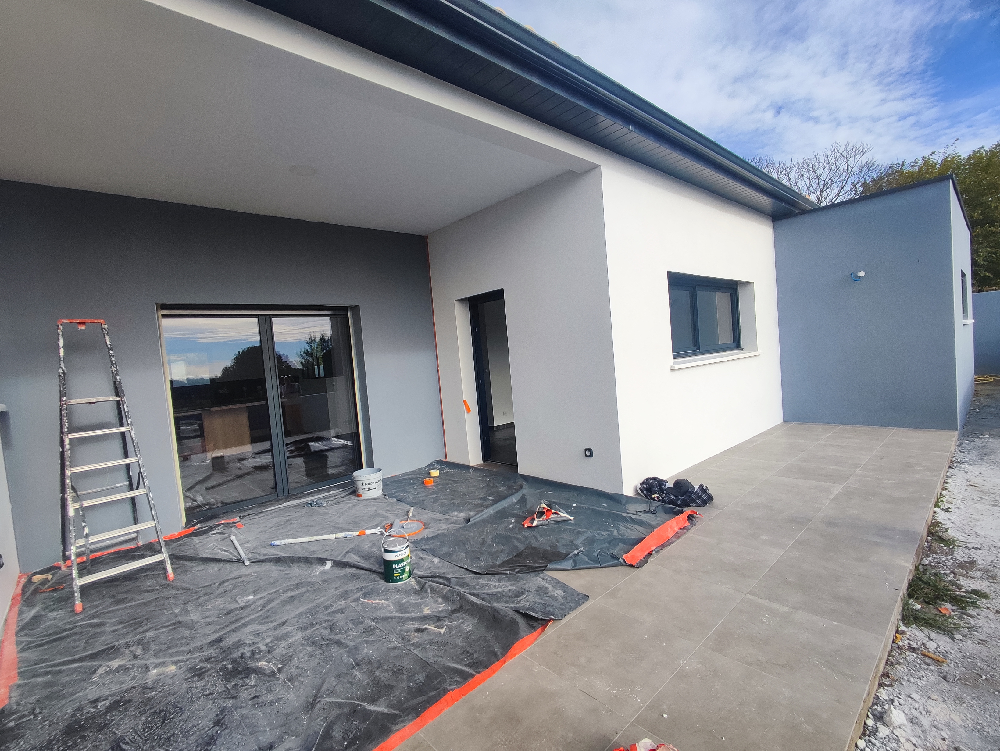
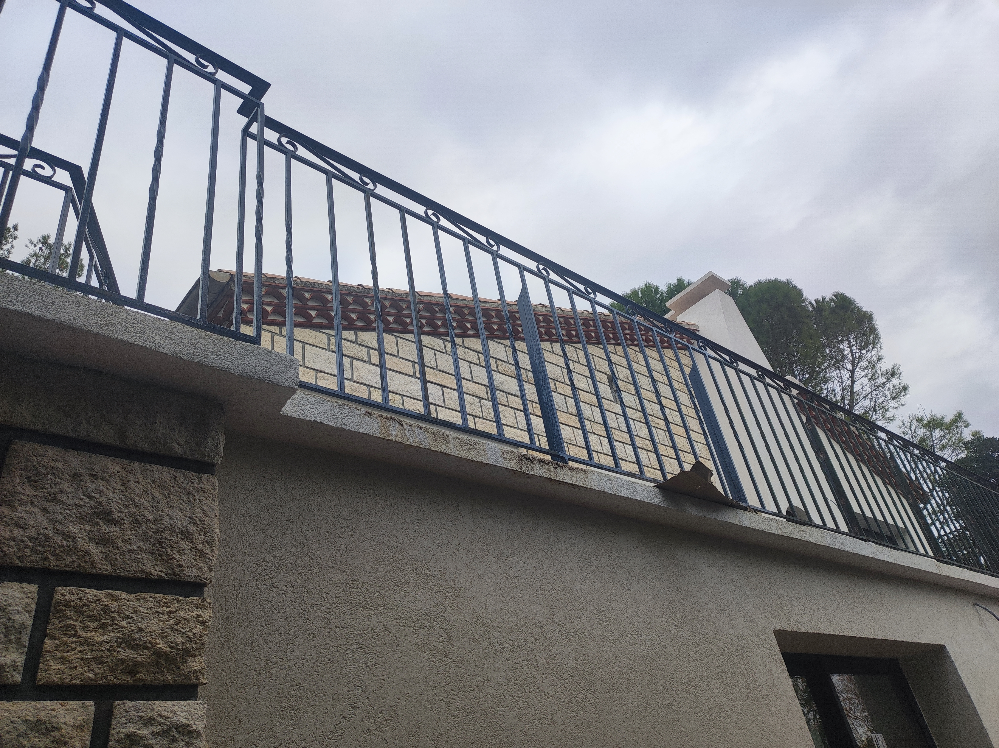
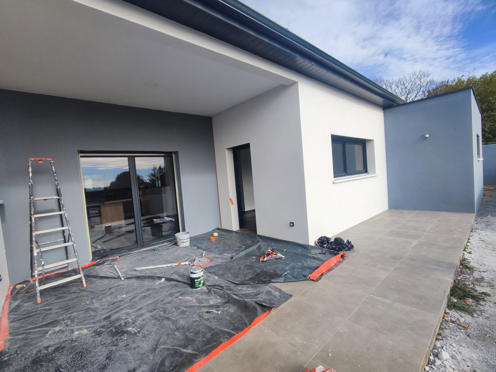

Protéger durablement vos boiseries et ferronneries extérieures
Les éléments extérieurs en bois et en métal sont les premiers exposés aux agressions climatiques : UV brûlants l’été, pluies battantes, condensation matinale et vents chargés d’humidité sur Montpellier, Nîmes et Béziers.
Sans entretien régulier, le bois grise, fendille et gonfle, tandis que les portails et garde-corps métalliques développent de la rouille. Peinture créa & finition remet à neuf l’ensemble de vos boiseries, ferronneries et ouvrages extérieurs avec des systèmes microporeux et anticorrosion professionnels.
Élimination des anciennes peintures écaillées, brossage de la rouille et dégraissage complet des supports.
Application de primaires bois anti-tanins/insecticides et de convertisseurs/primaires anti-rouille haute adhérence.
Lasures longue durée, peintures bois souples ou laques fer polyuréthane résistantes aux chocs.
Bâchage des terrasses, dallages, végétaux et menuiseries voisines pour un extérieur préservé.



Nos réalisations en peinture extérieure




Tous vos supports extérieurs rénovés
- Volets bois battants et persiennes : décapage ou ponçage complet, impression bois et deux couches de peinture ou lasure satinée.
- Portails, grilles et garde-corps métalliques : brossage mécanique de l’oxydation, primaire anti-rouille et laque fer haute résistance.
- Sous-faces de toiture, débords, poutres et pergolas : protection durable des bois extérieurs difficiles d’accès.
- Bardages, clôtures et abris de jardin : remise en teinte et imperméabilisation contre les intempéries.
- Appuis de fenêtres, seuils et murets : peinture minérale ou pliolite assortie à votre façade.
Lasure ou peinture opaque sur vos volets en bois ?
La lasure laisse apparaître le veinage naturel du bois et offre un rendu chaleureux, mais demande un rafraîchissement tous les 4 à 6 ans sur les faces très ensoleillées. La peinture microporeuse opaque assure une opacité totale, masque les anciennes réparations de pâte à bois et offre une durée de vie supérieure (jusqu’à 8 à 10 ans).
Nous vous conseillons la solution la plus adaptée selon l’essence du bois, son exposition plein Sud ou abritée et l’état de vos menuiseries.
Finition atelier ou sur site : Lorsque cela s’y prête, vos volets bois peuvent être démontés, préparés et peints dans des conditions optimales pour un tendu impeccable jusque dans les lames et rainures.
Questions fréquentes
Pouvez-vous repeindre des volets dont la peinture s’écaille déjà ?
Oui, nous commençons par décaper ou poncer toutes les zones cloquées jusqu’au bois sain, puis appliquons une sous-couche d’accrochage avant les deux couches de finition.
Comment traitez-vous un portail ou un garde-corps rouillé ?
Nous procédons à un grattage et brossage métallique approfondi, appliquons un traitement anti-rouille isolant puis deux couches de peinture fer anti-UV.
Faites-vous aussi les boiseries et façades en même temps ?
Oui, combiner la peinture des extérieurs et le ravalement de façade permet d’harmoniser les teintes et d’optimiser l’organisation du chantier.